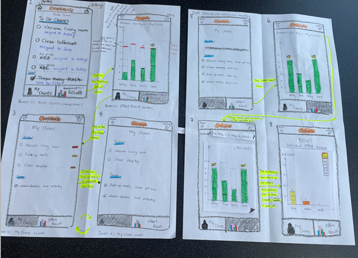
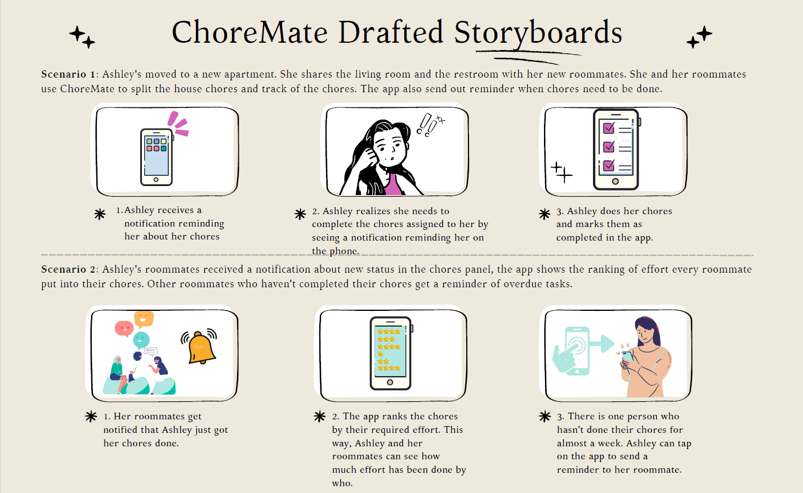
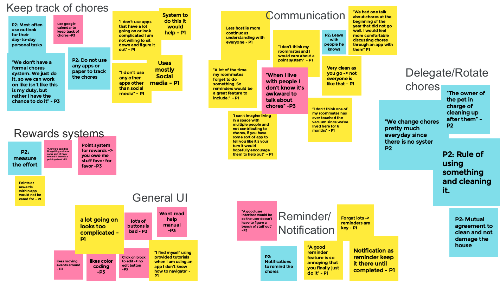
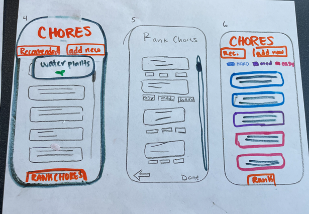
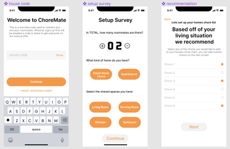
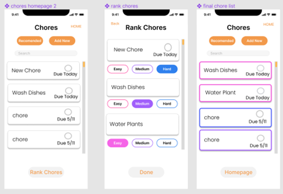
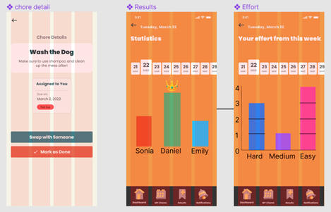

Paper prototype
Early sketches explored task creation, household setup, and how chore options would be presented.
UX Case Study / Roommate Coordination
A roommate chore management concept designed to reduce awkward reminders, assign chores more fairly, and make household effort easier to understand over time.

Problem Space
Shared homes often rely on paper lists, calendars, or informal reminders. Those systems can make chores easy to forget and uncomfortable to enforce, especially when roommates are still building trust.
Research Questions


Synthesis
The affinity work led us toward a system that could balance chores by perceived difficulty and make progress visible to everyone in the household.
Prototype Evolution

Early sketches explored task creation, household setup, and how chore options would be presented.

Paper screens helped test whether users understood assignment and progress concepts before visual polish.

The final concept brought chores, rankings, and household progress into one clearer app flow.
Key Screens

A central view for household status and entry points into chore actions.

Difficulty ranking helps the system balance chores by effort rather than simple count.

Progress feedback gives roommates a shared view of completed work and contribution patterns.